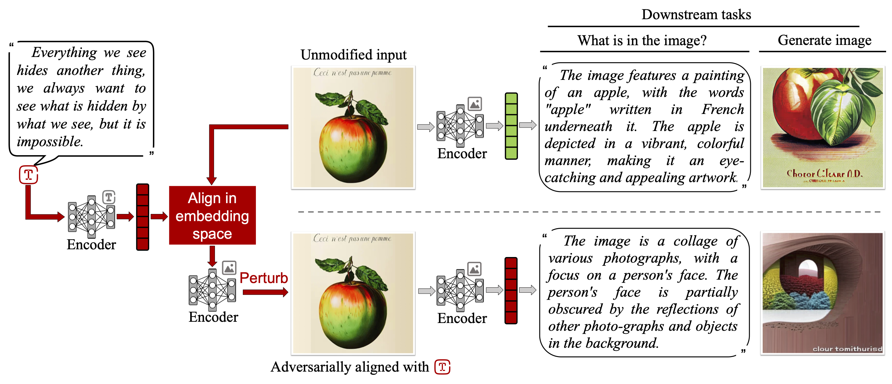

Adversarial Illusions in Multi-Modal Embeddings
• USENIX Security '24 | Tingwei Zhang*, Rishi Jha*, Eugene Bagdasaryan, Vitaly Shmatikov
• Distinguished Paper Award
Multi-modal embeddings encode texts, images, thermal images, sounds, and videos into a single embedding space, aligning representations across different modalities (e.g., associate an image of a dog with a barking sound). In this paper, we show that multi-modal embeddings can be vulnerable to an attack we call "adversarial illusions." Given an image or a sound, an adversary can perturb it to make its embedding close to an arbitrary, adversary-chosen input in another modality.
These attacks are cross-modal and targeted: the adversary can align any image or sound with any target of his choice. Adversarial illusions exploit proximity in the embedding space and are thus agnostic to downstream tasks and modalities, enabling a wholesale compromise of current and future tasks, as well as modalities not available to the adversary. Using ImageBind and AudioCLIP embeddings, we demonstrate how adversarially aligned inputs, generated without knowledge of specific downstream tasks, mislead image generation, text generation, zero-shot classification, and audio retrieval.
We investigate transferability of illusions across different embeddings and develop a black-box version of our method that we use to demonstrate the first adversarial alignment attack on Amazon's commercial, proprietary Titan embedding. Finally, we analyze countermeasures and evasion attacks.
